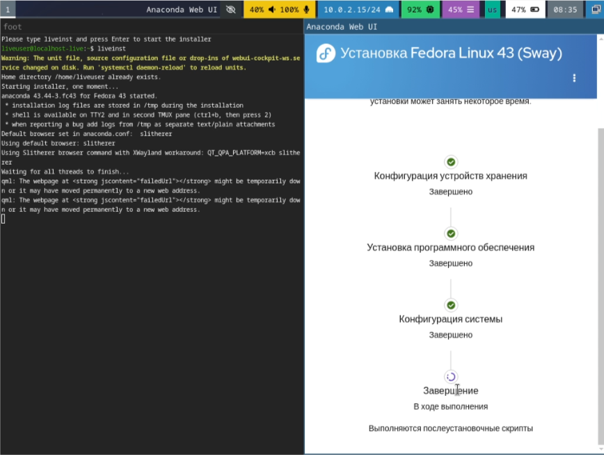
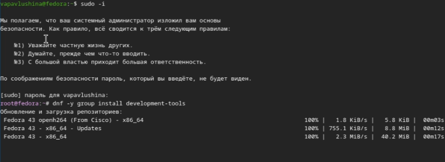
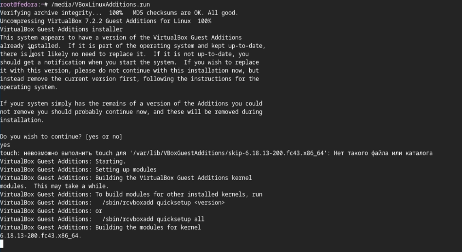
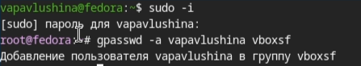
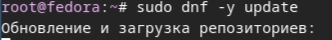
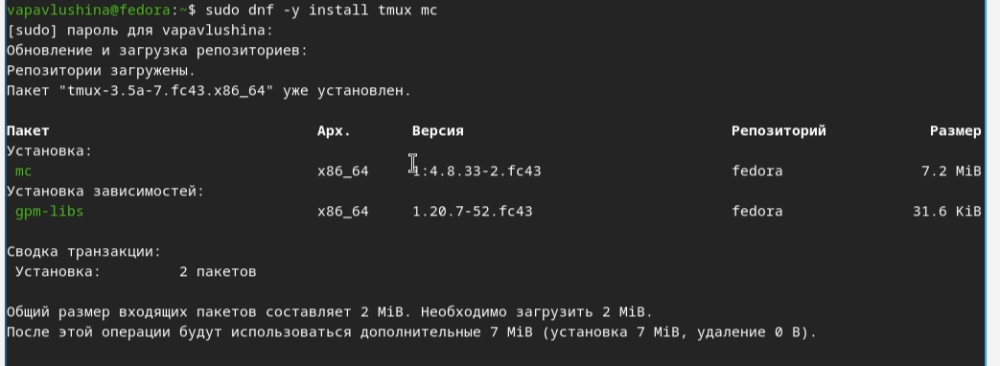
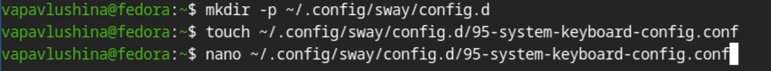
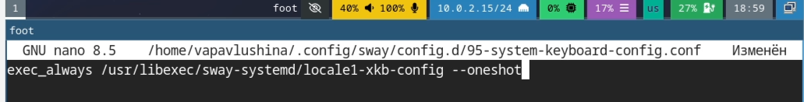
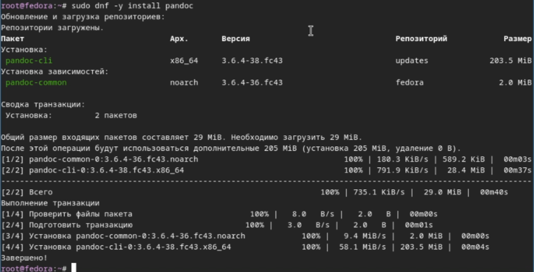

Освоение навыков уставновки, настройки и администрирования операционных систем является фундаментальной задачей подготовки специалистов в области информационных технологий и компьютерных наук. Особое значение приорбретает опыт работы с операционными системами семейства Linux, широко применяемыми в серверной среде, разработке программного обеспечения и научных вычислениях благодаря своей гибкости, открытости и надёжности.
Цель работы: Целью данной лабораторной работы является приобретение практических навыков установки операционной системы на виртуальную машину , настройки минимально необходимых для дальнейшей работы сервисов.
Задачи: - Установка Linux на VirtualBox - Установка необходимого ПО - Первоначальная настройка ОС для дальнейшей работы
Fedora Sway
Загрузили LiveCD.

Установили средства разработки.


Установили драйвера.

{#width=60%}Добавляем пользователя в необходимую папку.

Обновляем все пакеты.






Редактируем 
Установка имени пользователя и названия хоста. 



Установили Linux Fedora Sway, настроили её и сделали свою учётную запись.